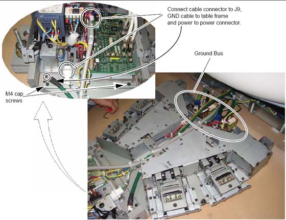
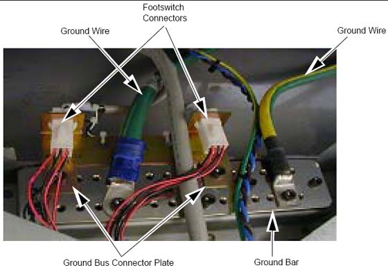
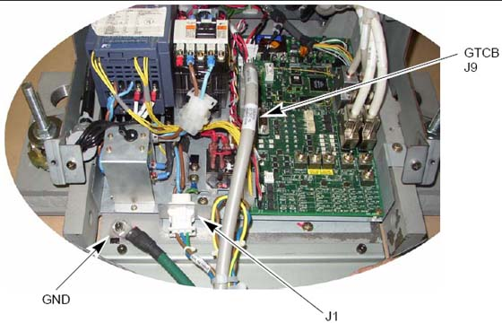
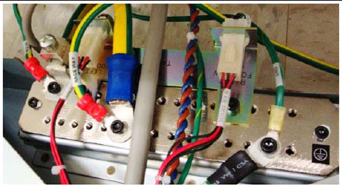
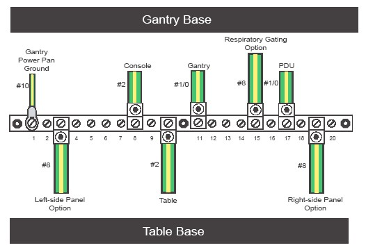

Operating Documentation
Direction 5193574-800, Rev# 22
LightSpeed 7.X Service Methods
Module Version 1.0, Version Date 4/22/10
Operating Documentation |
Cut the tie-wraps from around the cables in the gantry base and route the power cables from the gantry as shown in Illustration 1 .
Illustration 1: Footswitch Assembly Cable Wiring

Connect the ground bus connector plate.
| NOTE: | Additional M6 Hex-screws may be required to connect grounds. |
Illustration 2: Footswitch Ground/Bus Bar

Install the footswitch pedal bracket onto the installed ground bus bar.
Connect the ground wires (not all shown in Illustration 2) to the installed ground bus:
Table #2
Gantry #1/0 and #10 and 2-#8 (Optional)
Console #2
PDU #1/0
Torque per Table 1.
Table 1: Ground Bus Bar Torque Values
| Wire Size AWG | Driver | Bolt/Hex |
| #14 - 8 | 1.67 ft-lb (2.3 N-m) | 6.25 (8.5 N-m) |
| #6 - 4 | 3.0 ft-lb (4.1 N-m) | 12.5 (17 N-m) |
| #3 - 1 | 21 ft-lb (28.5 N-m) | |
| #0 - 2/0 | 29 ft-lb (39.3 N-m) |
Install all footswitch covers after work is completed. See Footswitch Cover Installation.
Pull and connect the cables as described in Table 2. The table cables are bundled with the gantry frame. Cut the cable ties to release bundles of cables.
| NOTE: | The footswitch connector and wiring harness may be run and secured to the ground bar assembly. |
Table 2: Table Cable Connections
| Table | From | CABLE DESCRIPTION |
| J1 table power | Gantry | 120 VAC |
| J9 table control | Gantry | Signal Cable Run #104 |
| Table ground | Gantry | Table ground |
Illustration 3: Table Connections

| NOTE: | You need to add the table ground cable and the footswitch adapter plate to ground bar, as shown. |
Illustration 4: Finished Ground Bar Connections

Illustration 5: Table-Gantry Raceway Bus - Grounds

Various types and sizes of wire are used to ground the system. Please use the type and sizes specified in Table 3.
Table 3: System Ground Connections
| AWG # | Connection To | Connection To | Used on: |
| #10 | Gantry (Power Pan) | Raceway | All |
| #8 | Left-side Panel Option | Raceway | VCT 7.2 Option |
| #2 | Console | Raceway | All |
| #2 | Table (frame) | Raceway | All |
| #1/0 | Gantry | Raceway | All |
| #8 | Respiratory Gating Option | Raceway | VCT 7.2 Optionl |
| #1/0 | PDU | Power Main | All |
| #8 | Right-side Panel Option | Raceway | VCT 7.2 Option |
All connections should be torqued to the values in Table 4.
Table 4: Ground Torque Values
| Wire Size AWG | Bolt/Hex |
| #14 - 8 | 6.25 (8.5 N-m) |
| #6 - 4 | 12.5 ft-lb (17 N-m) |
| #3 - 1 | 21 ft-lb (28.5 N-m) |
| #0 - 2/0 | 29 ft-lb (39.3 N-m) |